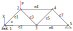
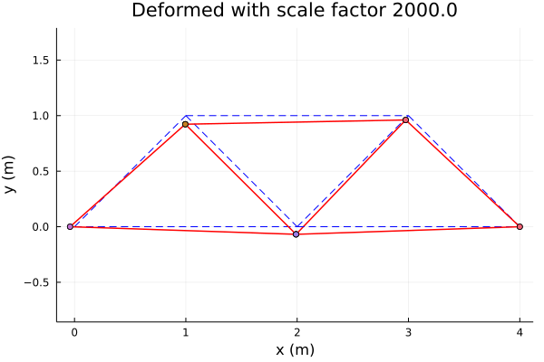
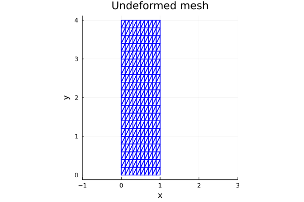
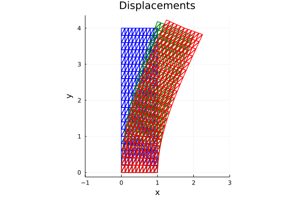

Application of Interval Linear Algebra to FEM analysis
The Finite Element Method is widely used to solve PDEs in Engineering applications and particularly in Structural Analysis problems [BAT14]. The procedure consists in discretizing the domain into elements and constructing (assembling) a system of balance equations. For linear problems, this system can be usually written as
\[K \cdot d = f \qquad K = \sum_{e=1}^{n_e} K_e\]
where $n_e$ is the number of elements of the domain, $f$ is the vector of external loads, $K_e$ is the stiffness matrix of element $e$ in global coordinates, $K$ is the assembled stiffness matrix and $d$ is the vector of unknown displacements. This tutorial shows how IntervalLinearAlgebra can be used to solve structural mechanics problems with uncertainty in the parameters. Particularly, it highlights the importance of parametric interval linear systems.
Simple truss structure
A frequent and simple type of structures are Truss structures, which are formed by bars connected but not welded. Truss models are usually considered during the conceptual design of bridges or other structures.
Stiffness equations
The stiffness matrix of a truss element in the local coordinate system is given by
\[K_L = s \left( \begin{matrix} 1 & 0 & -1 & 0 \\ 0 & 0 & 0 & 0 \\ -1 & 0 & 1 & 0 \\ 0 & 0 & 0 & 0 \end{matrix} \right),\]
where $s =\frac{E A}{L}$ is the stiffness, $E$ is the Young modulus, $A$ is the area of the cross-section and $L$ is the length of that truss element.
The change-of-basis matrix is given by
\[_G(Q)_L = Q = \left( \begin{matrix} \cos(\alpha) & -\sin(\alpha) & 0 & 0 \\ \sin(\alpha) & \cos(\alpha) & 0 & 0 \\ 0 & 0 & \cos(\alpha) & -\sin(\alpha) \\ 0 & 0 & \sin(\alpha) & \cos(\alpha) \end{matrix} \right).\]
The system of equations for each element is written in local coordinates as
\[K_L d_L = f_L\]
and using the change-of-basis we obtain the equations for that element in the global systems of coordinates
\[K_G d_G = f_G \qquad K_G = Q K_L Q^T.\]
After the system of equations for each element is in global coordinates, the whole system is assembled.
The unitary stiffness matrix (for $s=1$) can be computed using the following function.
function unitaryStiffnessMatrix( coordFirstNode, coordSecondNode )
diff = (coordSecondNode - coordFirstNode)
length = sqrt( diff' * diff )
c = diff[1] / length
s = diff[2] / length
Qloc2glo = [ c -s 0 0 ; s c 0 0 ; 0 0 c -s ; 0 0 s c ]
Kloc = [ 1 0 -1 0 ; 0 0 0 0 ; -1 0 1 0 ; 0 0 0 0 ]
Kglo = Qloc2glo * Kloc * transpose(Qloc2glo)
return Kglo, length
endunitaryStiffnessMatrix (generic function with 1 method)Example problem
A problem based on Example 4.1 from [SKA06] is considered. The following diagram shows the truss structure considered.
Case with fixed parameters
The scalar parameters considered are given by
E = 2e11 ; # Young modulus
A = 5e-3 ; # Cross-section areaThe coordinate matrix is given by
nodesCMatrix = [ 0.0 0.0 ;
1.0 1.0 ;
2.0 0.0 ;
3.0 1.0 ;
4.0 0.0 ];the connectivity matrix is given by
connecMatrix = [ 1 2 ;
1 3 ;
2 3 ;
2 4 ;
3 4 ;
3 5 ;
4 5 ];and the fixed degrees of freedom (supports) are defined by the vector
fixedDofs = [ 2 9 10 ];The number of elements and nodes are computed, as well as the free degrees of freedom.
numNodes = size( nodesCMatrix )[1] # compute the number of nodes
numElems = size( connecMatrix )[1] # compute the number of elements
freeDofs = zeros(Int8, 2*numNodes-length(fixedDofs))
indDof = 1 ; counter = 0
while indDof <= (2*numNodes)
if !(indDof in fixedDofs)
global counter = counter + 1
freeDofs[ counter ] = indDof
end
global indDof = indDof + 1
endThe global stiffness equations are computed for the unknown displacements (free dofs)
KG = zeros( 2*numNodes, 2*numNodes )
FG = zeros( 2*numNodes )
for elem in 1:numElems
indexFirstNode = connecMatrix[ elem, 1 ]
indexSecondNode = connecMatrix[ elem, 2 ]
dofsElem = [2*indexFirstNode-1 2*indexFirstNode 2*indexSecondNode-1 2*indexSecondNode ]
KGelem, lengthElem = unitaryStiffnessMatrix( nodesCMatrix[ indexSecondNode, : ], nodesCMatrix[ indexFirstNode, : ] )
stiffnessParam = E * A / lengthElem
for i in 1:4
for j in 1:4
KG[ dofsElem[i], dofsElem[j] ] = KG[ dofsElem[i], dofsElem[j] ] + stiffnessParam * KGelem[i,j]
end
end
end
FG[4] = -1e4 ;
KG = KG[ freeDofs, : ]
KG = KG[ :, freeDofs ]
FG = FG[ freeDofs ]7-element Vector{Float64}:
0.0
0.0
-10000.0
0.0
0.0
0.0
0.0and the system is solved.
u = KG \ FG
UG = zeros( 2*numNodes )
UG[ freeDofs ] = u7-element Vector{Float64}:
-1.9999999999999998e-5
-2.500000000000003e-6
-3.8713203435596426e-5
-5.0e-6
-3.414213562373095e-5
-1.2500000000000002e-5
-1.9571067811865474e-5The reference (dashed blue line) and deformed (solid red) configurations of the structure are ploted. Since the displacements are very small, a scaleFactor is considered to amplify the deformation and ease the visualization.
using Plots
scaleFactor = 2e3
plot();
for elem in 1:numElems
indexFirstNode = connecMatrix[ elem, 1 ];
indexSecondNode = connecMatrix[ elem, 2 ];
# plot reference element
plot!( nodesCMatrix[ [indexFirstNode, indexSecondNode], 1 ],
nodesCMatrix[ [indexFirstNode, indexSecondNode], 2 ],
linestyle = :dash, aspect_ratio = :equal,
linecolor = "blue", legend = false)
# plot deformed element
plot!( nodesCMatrix[ [indexFirstNode, indexSecondNode], 1 ]
+ scaleFactor* [ UG[indexFirstNode*2-1], UG[indexSecondNode*2-1]] ,
nodesCMatrix[ [indexFirstNode, indexSecondNode], 2 ]
+ scaleFactor* [ UG[indexFirstNode*2 ], UG[indexSecondNode*2 ]] , markershape = :circle, aspect_ratio = :equal, linecolor = "red",
linewidth=1.5, legend = false )
end
Problem with interval parameters
Suppose now we have a 10% uncertainty for the stiffness $s_{23}$ associated with the third element. To model the problem, we introduce the symbolic variable s23 using the IntervalLinearAlgebra macro @affinevars.
using IntervalLinearAlgebra
@affinevars s231-element Vector{AffineExpression{Int64}}:
s23now we can construct the matrix as before
KGp = zeros(AffineExpression{Float64}, 2*numNodes, 2*numNodes );
for elem in 1:numElems
print(" assembling stiffness matrix of element ", elem , "\n")
indexFirstNode = connecMatrix[ elem, 1 ]
indexSecondNode = connecMatrix[ elem, 2 ]
dofsElem = [2*indexFirstNode-1 2*indexFirstNode 2*indexSecondNode-1 2*indexSecondNode ]
KGelem, lengthElem = unitaryStiffnessMatrix( nodesCMatrix[ indexSecondNode, : ], nodesCMatrix[ indexFirstNode, : ] )
if elem == 3
stiffnessParam = s23
else
stiffnessParam = E * A / lengthElem
end
for i in 1:4
for j in 1:4
KGp[ dofsElem[i], dofsElem[j] ] = KGp[ dofsElem[i], dofsElem[j] ] + stiffnessParam * KGelem[i,j]
end
end
end
KGp = KGp[ freeDofs, : ]
KGp = KGp[ :, freeDofs ]7×7 Matrix{AffineExpression{Float64}}:
8.53553e8 -3.53553e8 -3.53553e8 … 0 0
-3.53553e8 0.5s23+8.53553e8 -0.5s23+3.53553e8 -5.0e8 0
-3.53553e8 -0.5s23+3.53553e8 0.5s23+3.53553e8 0 0
-5.0e8 -0.5s23 0.5s23 -3.53553e8 -3.53553e8
0 0.5s23 -0.5s23 -3.53553e8 -3.53553e8
0 -5.0e8 0 … 1.20711e9 0
0 0 0 0 7.07107e8Now we can construct the AffineParametricArray
KGp = AffineParametricArray(KGp)7×7 AffineParametricMatrix{Float64, Matrix{Float64}}:
8.53553e8 -3.53553e8 -3.53553e8 … 0 0
-3.53553e8 0.5s23+8.53553e8 -0.5s23+3.53553e8 -5.0e8 0
-3.53553e8 -0.5s23+3.53553e8 0.5s23+3.53553e8 0 0
-5.0e8 -0.5s23 0.5s23 -3.53553e8 -3.53553e8
0 0.5s23 -0.5s23 -3.53553e8 -3.53553e8
0 -5.0e8 0 … 1.20711e9 0
0 0 0 0 7.07107e8The range of the stiffness is
srange = E * A / sqrt(2) ± 0.1 * E * A / sqrt(2)[6.36396e+08, 7.77818e+08]To solve the system, we could of course just subsitute srange into the parametric matrix KGp and solve the "normal" interval linear system (naive approach)
usimple = solve(KGp(srange), Interval.(FG))7-element Vector{Interval{Float64}}:
[-0.00082457, 0.00078457]
[-0.000425614, 0.00041974]
[-0.000846857, 0.000730646]
[-0.000507856, 0.000493328]
[-0.00106426, 0.000120603]
[-0.000636756, 0.000611756]
[-0.000786057, 0.000746914]This approach, however suffers from the dependency problem and hence the computed displacements will be an overestimation of the true displacements.
To mitigate this issue, algorithms to solve linear systems with parameters have been developed. In this case we use the algorithm presented in [SKA06]
uparam = solve(KGp, FG, srange)7-element Vector{Interval{Float64}}:
[-2.00001e-05, -1.99999e-05]
[-2.69642e-06, -2.30358e-06]
[-3.89097e-05, -3.85167e-05]
[-5.00001e-06, -4.99999e-06]
[-3.4535e-05, -3.37492e-05]
[-1.26965e-05, -1.23035e-05]
[-1.97675e-05, -1.93746e-05]We can now compare the naive and parametric solution
hcat(usimple, uparam)/1e-67×2 Matrix{Interval{Float64}}:
[-824.57, 784.57] [-20.0001, -19.9999]
[-425.614, 419.74] [-2.69642, -2.30358]
[-846.857, 730.646] [-38.9097, -38.5167]
[-507.856, 493.328] [-5.00001, -4.99999]
[-1064.26, 120.603] [-34.535, -33.7492]
[-636.756, 611.756] [-12.6965, -12.3035]
[-786.057, 746.914] [-19.7675, -19.3746]As you can see, the naive non-parametric approach significantly overestimates the displacements. It is true that for this very simple and small structure, both displacements are small, however as the number of nodes increases, the effect of the dependency problem also increases and the non-parametric approach will fail to give useful results. This is demonstrated in the next section.
A continuum mechanics problem
In this problem a simple solid plane problem is considered. The solid is fixed on its bottom edge and loaded with a shear tension on the top edge.
First, we set the geometry and construct a regular grid of points
L = [1.0, 4.0] # dimension in each direction
t = 0.2 # thickness
nx = 10 # number of divisions in direction x
ny = 20 # number of divisions in direction y
nel = [nx, ny]
neltot = 2 * nx * ny; # total number of elements
nnos = nel .+ 1 # number of nodes in each direction
nnosx, nnosy = nnos
nnostot = nnosx * nnosy ; # total number of nodeswe compute the vector of indexes of the loaded nodes (bottom ones)
startloadnode = (nnosy - 1) * nnosx + 1 # boundary conditions
endinloadnode = nnosx * nnosy
LoadNodes = startloadnode:endinloadnode
lins1 = range(0, L[1], length=nnosx)
lins2 = range(0, L[2], length=nnosy)0.0:0.2:4.0and construct the matrix of coordinates of the nodes
nodes = zeros(nnostot, 2) # nodes: first column x-coord, second column y-coord
for i = 1:nnosy # first discretize along y-coord
idx = (nnosx * (i-1) + 1) : (nnosx*i)
nodes[idx, 1] = lins1
nodes[idx, 2] = fill(lins2[i], nnosx)
endThe connectivity matrix Mcon is computed, considering 3-node triangular elements
Mcon = Matrix{Int64}(undef, neltot, 3); # connectivity matrix
for j = 1:ny
for i = 1:nx
intri1 = 2*(i-1)+1+2*(j-1)*nx
intri2 = intri1 + 1
Mcon[intri1, :] = [j*nnosx+i, (j-1)*nnosx+i, j*nnosx+i+1 ]
Mcon[intri2, :] = [j*nnosx+i+1, (j-1)*nnosx+i, (j-1)*nnosx+i+1]
end
endthe undeformed mesh is plotted as follows
Xel = Matrix{Float64}(undef, 3, neltot); Yel = Matrix{Float64}(undef, 3, neltot)
for i = 1:neltot
Xel[:, i] = nodes[Mcon[i, :], 1] # the j-th column has the x value at the j-th element
Yel[:, i] = nodes[Mcon[i, :], 2] # the j-th column has the y value at the j-th element
end
fig = plot(ratio=1, xlimits=(-1, 3), title="Undeformed mesh", xlabel="x", ylabel="y")
plot!(fig, [Xel[:, 1]; Xel[1, 1]], [Yel[:, 1]; Yel[1, 1]], linecolor=:blue, linewidth=1.4, label="")
for i = 2:neltot
plot!(fig, [Xel[:, i]; Xel[1, i]], [Yel[:, i]; Yel[1, i]], linecolor=:blue, linewidth=1.4, label="")
end
Let us now define the material parameters. Here we assume a 10% uncertainty on the Young modulus, while Poisson ratio and the density are fixed. can be related to a steel plate problem with an unknown composition, thus unknown exact Young modulus value.
ν = 0.25 # Poisson
ρ = 8e3 # density
@affinevars E # Young modulus, defined as symbolic variable
En = 200e9 # nominal value of the young modulus
Erange = En ± 0.1 * En # uncertainty range of the young modulus[1.8e+11, 2.2e+11]We can now assemble the global stiffness matrix. We set the constitutive matrix for a plane stress state.
C = E / (1-ν^2) * [ 1 ν 0 ;
ν 1 0 ;
0 0 (1-ν)/2 ]3×3 Matrix{AffineExpression{Float64}}:
1.06667E 0.266667E 0
0.266667E 1.06667E 0
0 0 0.4EWe compute the free and fixed degrees of freedom
function nodes2dofs(u)
v = Vector{Int64}(undef, 2*length(u))
for i in 1:length(u)
v[2i-1] = 2u[i] - 1; v[2i] = 2u[i]
end
return v
end
FixNodes = 1:nnosx
FixDofs = nodes2dofs(FixNodes) # first add all dofs of the nodes
deleteat!(FixDofs, 3:2:(length(FixDofs)-2)) # then remove the free dofs of the nodes
LibDofs = Vector(1:2*nnostot) # free degrees of fredom
deleteat!(LibDofs, FixDofs)449-element Vector{Int64}:
3
5
7
9
11
13
15
17
19
23
⋮
454
455
456
457
458
459
460
461
462and we assemble the matrix
function stiffness_matrix(x, y, C, t)
A = det([ones(1, 3); x'; y']) / 2 # element area
B = 1 / (2*A) * [y[2]-y[3] 0 y[3]-y[1] 0 y[1]-y[2] 0 ;
0 x[3]-x[2] 0 x[1]-x[3] 0 x[2]-x[1] ;
x[3]-x[2] y[2]-y[3] x[1]-x[3] y[3]-y[1] x[2]-x[1] y[1]-y[2] ]
K = B' * C * B * A * t ;
return K
end
KG = zeros(AffineExpression{Float64}, 2*nnostot, 2*nnostot);
for i = 1:neltot
Ke = stiffness_matrix(Xel[:, i], Yel[:, i], C, t)
aux = nodes2dofs(Mcon[i, :])
KG[aux, aux] .+= Ke
end
K = AffineParametricArray(KG[LibDofs, LibDofs])449×449 AffineParametricMatrix{Float64, Matrix{Float64}}:
0.466667E -0.213333E 0 … 0 0 0
-0.213333E 0.466667E -0.213333E 0 0 0
0 -0.213333E 0.466667E 0 0 0
0 0 -0.213333E 0 0 0
0 0 0 0 0 0
0 0 0 … 0 0 0
0 0 0 0 0 0
0 0 0 0 0 0
0 0 0 0 0 0
0 0 0 0 0 0
⋮ ⋱
0 0 0 … 0 0 0
0 0 0 0 0 0
0 0 0 0 0 0
0 0 0 0.04E 0 0
0 0 0 -0.08E 0 0
0 0 0 … -0.0666667E -0.213333E 0.04E
0 0 0 0.266667E 0.0266667E -0.08E
0 0 0 0.0266667E 0.233333E 0
0 0 0 -0.08E 0 0.133333EFinally, we assemble the loads vector
areaelemsup = L[1] / nx * t
f = zeros(2*nnostot);
f[2*LoadNodes[1]] = 0.5 * areaelemsup;
for i in 2:(length(LoadNodes)-1)
idx = 2 * LoadNodes[i]
f[idx-1] = 1 * areaelemsup # horizontal force
end
f[2*LoadNodes[end]] = 0.5 * areaelemsup
q = 1e9 # distributed load on the up_edge
F = q * f;
FLib = F[LibDofs]now we can solve the displacements from the parametric interval linear system and plot minimum and maximum displacement.
u = solve(K, FLib, Erange) # solving449-element Vector{Interval{Float64}}:
[-0.000375901, -0.00030072]
[-0.000786493, -0.000629193]
[-0.00115412, -0.000923289]
[-0.00141887, -0.00113508]
[-0.00154482, -0.00123585]
[-0.0015165, -0.00121319]
[-0.0013351, -0.00106807]
[-0.00101494, -0.00081195]
[-0.000574351, -0.00045948]
[0.00801993, 0.010025]
⋮
[-0.0422054, -0.0337642]
[0.997107, 1.24639]
[-0.0866339, -0.069307]
[0.99723, 1.24654]
[-0.13129, -0.105031]
[0.997325, 1.24666]
[-0.176272, -0.141017]
[0.997275, 1.2466]
[-0.221607, -0.177285]plotting
U = zeros(Interval, 2*nnostot)
U[LibDofs] .= u
Ux = U[1:2:2*nnostot-1]
Uy = U[2:2:2*nnostot]
nodesdef = hcat(nodes[:, 1] + Ux, nodes[:, 2] + Uy);
Xeld = Interval.(copy(Xel))
Yeld = Interval.(copy(Yel))3×400 Matrix{Interval{Float64}}:
[0.2, 0.200001] [0.2, 0.200001] … [4, 4]
[0, 0] [0, 0] [3.79999, 3.8]
[0.2, 0.200001] [0, 0] [3.79999, 3.8]build elements coordinate vectors
for i = 1:neltot
Xeld[:, i] = nodesdef[Mcon[i, :], 1] # the j-th column has the x coordinate of the j-th element
Yeld[:, i] = nodesdef[Mcon[i, :], 2] # the j-th column has the y coordinate of the j-th element
end
plot!(fig, [inf.(Xeld[:, 1]); inf.(Xeld[1, 1])], [inf.(Yeld[:, 1]); inf.(Yeld[1, 1])], linecolor=:green, linewidth=1.4, label="", title="Displacements")
for i = 2:neltot
plot!(fig, [inf.(Xeld[:, i]); inf.(Xeld[1, i])], [inf.(Yeld[:, i]); inf.(Yeld[1, i])], linecolor=:green, linewidth=1.4, label="")
end
plot!(fig, [sup.(Xeld[:, 1]); sup.(Xeld[1, 1])], [sup.(Yeld[:, 1]); sup.(Yeld[1, 1])], linecolor=:red, linewidth=1.4, label="", title="Displacements")
for i = 2:neltot
plot!(fig, [sup.(Xeld[:, i]); sup.(Xeld[1, i])], [sup.(Yeld[:, i]); sup.(Yeld[1, i])], linecolor=:red, linewidth=1.4, label="")
end
In this case, ignoring the dependency and treating the problem as a "normal" interval linear system would fail. The reason for this is that the matrix is not strongly regular, which is a necessary condition for the implemented algorithms to work.
is_strongly_regular(K(Erange))falseConclusions
This tutorial showed how interval methods can be useful in engineering applications dealing with uncertainty. As in most applications the elements in the matrix will depend on some common parameters, due to the dependency problem neglecting the parametric structure will result in poor results. This highlights the importance of parametric interval methods in engineering applications.